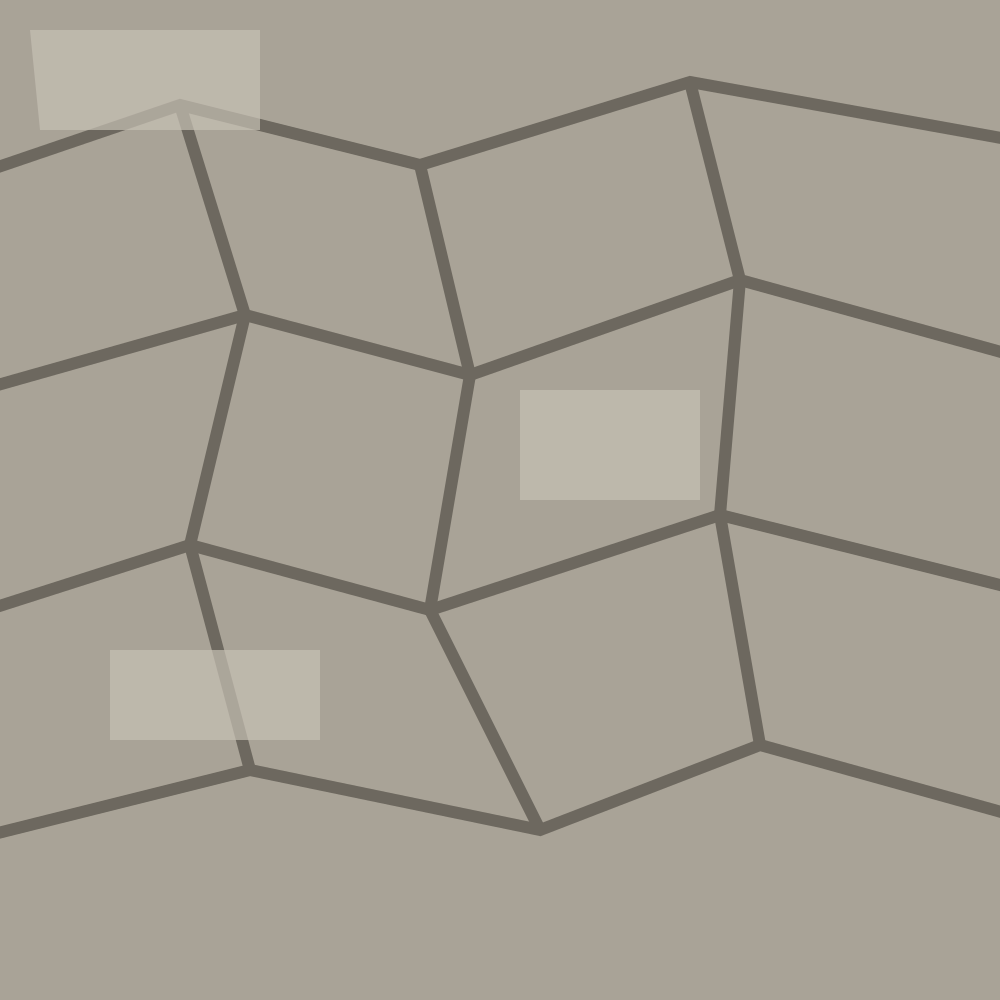

Design
Draw enough to build clearly.
- Site assessment + measured base
- Concept plan + material direction
- Planting palette + quantities
- Phasing + construction scope
Services / scope matrix
Design, earthwork, stone, planting and finish systems stay connected through the same sequence. The exact scope changes with the site.
Layout, planting structure, seasonal sequence and the ground that supports it.
Terraces, steps, walls, walks and drainage designed as one section through the site.
Trees, shrubs, grasses and perennials chosen for light, water, soil and long-term shape.
Drainage, irrigation direction and low-voltage lighting integrated before finish work.
Design
Build
Steward

Material principle
We prefer materials that improve with wear and can be repaired in place: stone, gravel, timber, steel and planting suited to the site rather than a short-lived finish layer.
Define a project scope